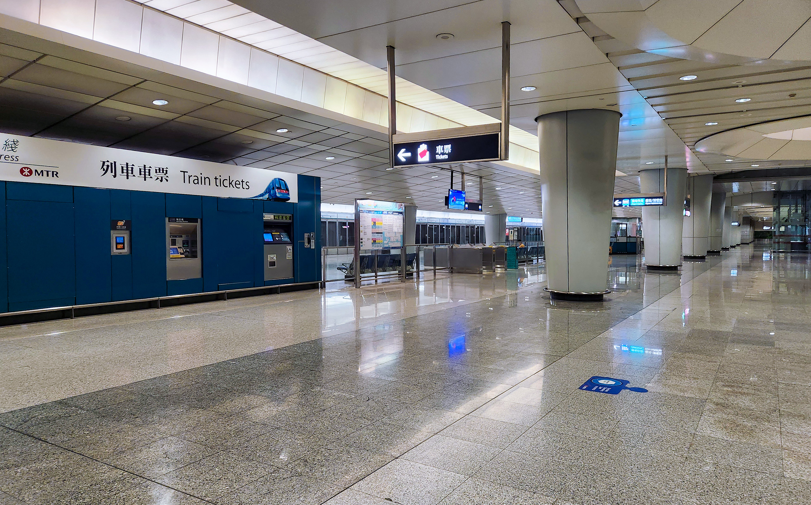
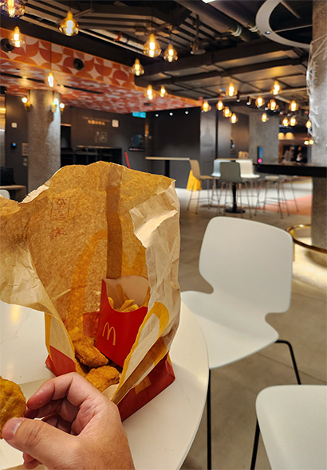
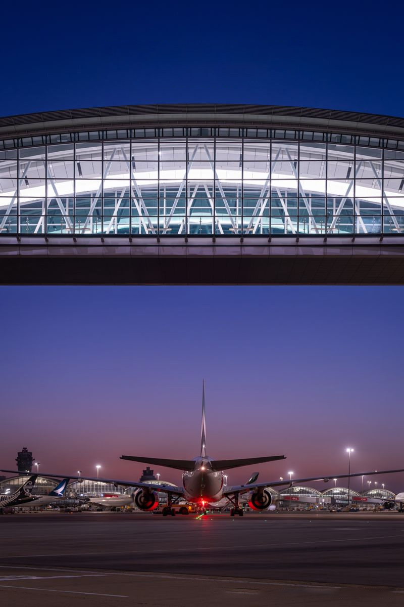
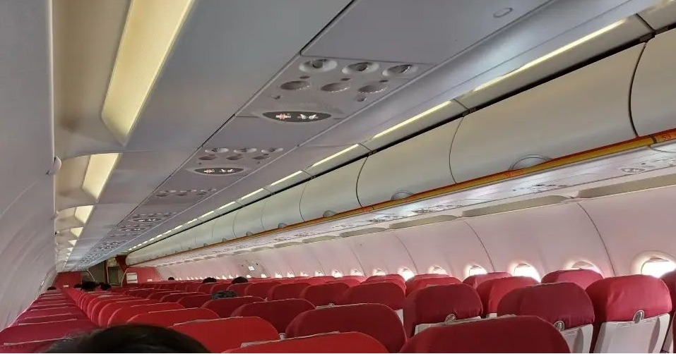
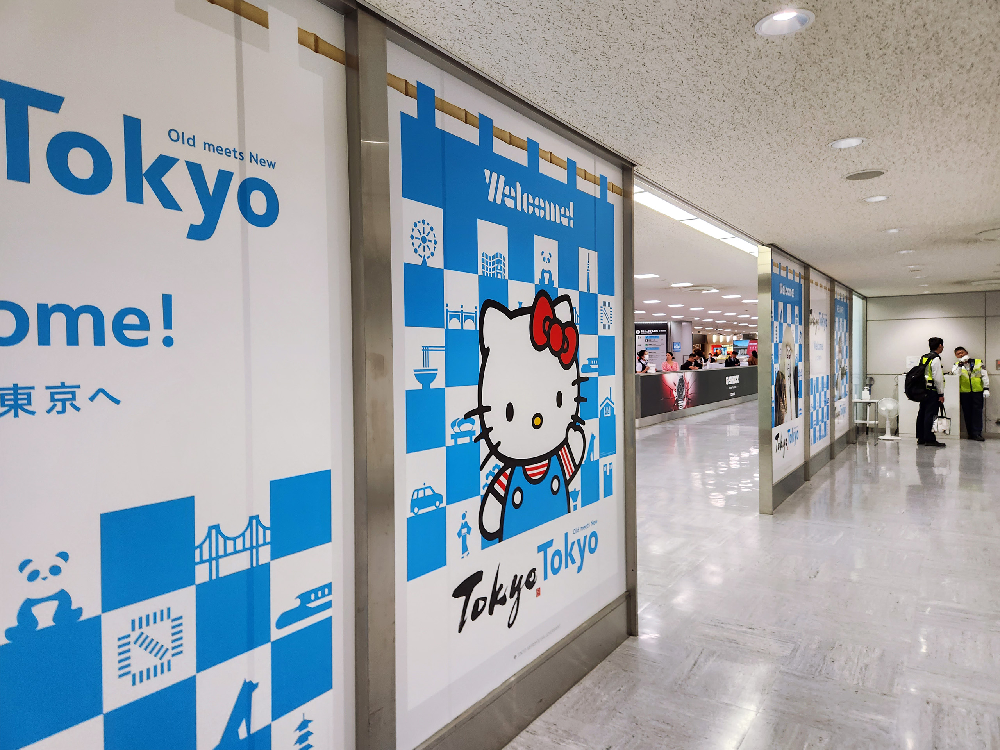

在東京市中心的有限數小時
上野御徒町
23年10月的時候還是入境、海關分開申報要用兩個QR CODE才能入境日本, 入境狀況也沒有因為措施實行久了而變得順暢, 經過一翻折騰終於來到TRANSIT TO CITY大堂B1F。
作為成田機場連接市區的交通手段, 我幾乎每次均會選Skyliner, NEX除非直接住東京站否則又貴又慢,
機場巴士更是一定不會考慮。
如果是網上訂了Skyliner的票是可以於閘前自動售票機以QR code取票, 但遊客們一般因為不懂操作以致每部機都會出現極長蛇之列!
同時, 這裡Skyliner的information center其實是有兩間的! 網上一般是叫人去比較大的那一間所以那一間information center同樣會充斥大堆人群,
若果懂得去比較小的另一間Skyliner information center換/購票, 這裡大可慳至少二三十分鐘輪候時間~
亦因如此恰巧趕上Skyliner最近班次, 約四十分鐘車程後於早上九時廿分人已步足上野。
先把行李放在京成上野站coin locker, 選擇來上野本身也有些目的和原因。
第一樣, 是先要買塩飴(鹽糖), 可是找了幾間藥局和菓子店, 連店員也問了都說沒有賣!
太奇怪也沒時間心力再找下去, 走著走著差不多到達御徒町, 也好, 可以找找第二樣要買的, 就是一件能在一會兒後機上穿的外套。
只是去了最近的Uniqlo和GU, 也找不著心水, 算了, 可能因為通宵沒正式睡過感覺頗累,
也差不多是時候在御徒町駅前通り附近試一樣我從未在日本試過的東西!(雖然也有很多啦)
美國總領事館

終於來到9月初面試那一天, 那天我比原定時間更早到達中環花園道美國總領事館,
在大樓門前保安出示application confirmation, 怎料我錯誤地印了一張之前一個預約的確認信 (which is 錯日子和時間)!
那保安叫我在信上時間再來, 我呆了彷了走開十多米後才回神(因為後面不停有人要進入), 及立即返回門前展示今天正確的booking confirmation email方能成功進入大樓;
蒲步入大樓, 走到一個像reception的樓層, 每人先要過安檢, 之後每個人均會獲發一個膠兜把所有隨身物品文件放在兜上, 然後跟據指示分流到長蛇之列, 再細分到不同櫃檯前作「第一輪」面試。
第一關排隊時間有點長, 我排隊時就親眼看到有人在第一輪初審經已被拒絕申請或勸退, 這也太嚇人。
我終於來到櫃檯前, 自己第一輪面談的對話比較籠統, 走運我排到談話的那位官員是說廣東話的(雖然也是隨機的, 櫃位外國人好像比中國人多一點)! 可是因為我真的不容有失反而給自己壓力而表現得緊張,
最後十分感恩地談話通過拿到一張紙仔 (每人面談的內容均不一樣, 就如他們申請去美國的原因也不一樣, 但千萬別像我一樣, 要表現得輕鬆),
拿回所有東西過隔壁推門, 便進入第二關考驗。
在穿過了類似body scanning的機關及寄存物品的過場房間, 之後所有申請者會被要求打手指模, 打後便來到最重要的一環緩緩排隊見真正的移民官; 那條隊人龍不多, 可是前進得也很慢, 反而令那一刻的心情每秒的緊張感覺也在遞增...
終於, 到我了, 我走到並列一格格的櫃檯前, 與我面談的移民官, 一看上去簡直跟<<James Bond>>中的Q沒兩樣!

那種一看上去已經知道是smart滿瀉的樣子, 只要講錯半句說話已經會陷入覆水難收翻車無誤的局面的非凡之人!...
第二輪面談我答得超差的, 內容請原諒我不能公開;
移民官在問我四﹑五條問題之後, 忽然帶著輕輕的說: "OK, you can go now."
如我上面所說, 面談時間一般都不會那麼短, 且面談之後正常情況下申請人應該會即場被通知簽證成功獲批與否,
而現在他是什麼也沒跟我說直接叫我走! 😭
自那天之後我心情忐忑茶飯不思, 不敢進行等事如訂機票酒店繼續給卡住, 一路以來的各種訓練, 卻縱是不能停止...
說起訓練, 慚愧得以以下一張圖足已總結:
August

September

October

稍為有接觸過跑步的相信都會知道, 一個業餘興趣只是行山的人只有經過此等訓練怎麼足夠完整跑完一個馬拉松!!! 更莫說是他的初馬!
自己最長的一課也只有青公的15公里, 而且當日狀態也超差... 在10月4日午後練完最後一課, 當日也完全不能入睡休息, 晚上便直奔去香港機場...
週邊準備篇 ▶
Uber以紅VAN速度左穿右插飛抵九龍站, 一下車就在港鐵站門給兩大一細西班牙人搭訕, 他們彷徨問:「請問你這裡有的士到外面嗎?」
眼前的九龍站外是全面地空蕩蕩半架任何車種也沒有的境況。
結果叫他們耐心多等一會幸運的話或許會等到的士。如果自己不是要趕赴機場, 應該會幫他們call Uber/的士; 現在心想, 遊客遠道而來一步出連接機場的地方就面體如此盛況... 此城何等繽紛。
我走進月台, 情況也好不太多:

整個月台只有我和另外二人(其中一個看上去像是職員);
坐機場快線, 永遠會有兩個人坐成排四個位然後隔到最遠大聲高談, 都CLS。
到達機場, 先去HX櫃檯check-in, 由於我是先飛到日本(這個容後會詳述), HX的職員對我轉HX機先到東京再去芝加哥好像甚感興趣, 好像也比較少人這樣做...
進禁區, 還有點時間, 凌晨時份我能夠入的lounge也沒開, 那就一於試試「那個24小時平民lounge」吧~ 😂

這間麥難民營, 在凌晨這個時份, 比我想像中人多很多(有原因的)!
本來想靜靜的我, 吃完也沒坐多久, 便慢步往閘口。

HX凌晨機飛東京的gate就是一整個敗北, 必先經過那個我極之討厭話之佢有什麼無人商店什麼橋下可走A380的天際走廊,
浪費了多少腳骨力走到老遠才到的201-230登機閘口,
本應只有寥寥一兩航班, 結果還是多麼熱鬧嘈雜。
原因是在旁邊的登機閘口充斥著如Kasxxxg那一班準備去TransJeju比賽的越野跑手起起哄哄的. 其實他們就是剛才在麥當勞必律不剌的那堆人。
此刻只想快點上機的我。
凌晨二時許, 登上機型A320-200的HX606航班,

(網上圖片)
是基本的3+3座位全機經濟位細機佈局, 沒有任何餐飲和In-flight Entertainment System(IES, 機內娛樂系統), 乖乖的半睡半醒飛機出奇的穩定, 左右前後沒什麼怪客已是萬幸Red-eye早上8時準時抵達東京成田機場。